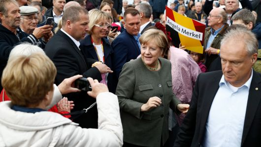
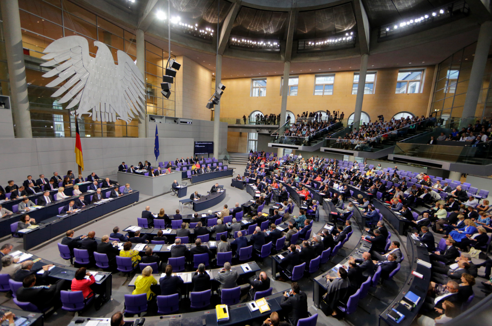

The German Environmentalism
According to many articles and news about the rising of AfD, we know that AfD started in East Germany where its economy did not get many benefits from the reunification of Germany. In The beginning, AfD declared that Germany should go out of The European Union and use Mark as German currency again since AfD noticed that Germany has to contribute so many money invest on other countries such as Italy and Greece. Laterally, following the rising wave of new immigrants and refugees, AfD sated Germany has to come out a set of immigrant low to restrict the line of being immigrants and the line of accepting refugees. From many studies, the rising of AfD was not out of people’s expectation, since Merkel and coalition did not satisfy many Germans when it comes to the policy of immigrants and refugees. Many German teens and people who were standing with Merkel started to show their disappointment with the current government and lost their patience. These people voted for AfD that they do not know much, but many of them still think this is a way to give current government pressure and also many of people give a hope on AfD that wish them possibly will do better. From my perspective, people as citizens always have their rights to give pressure on the current government. However, every each action that people make should also take the responsibility to the society.
More Info 